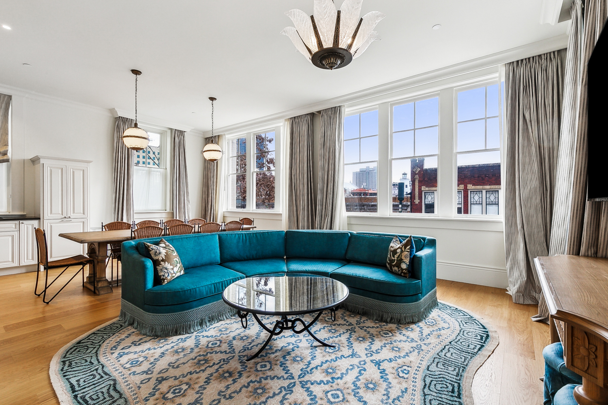

Built around the relationship, not the transaction.

Shelley Straughan launched Felicity Contract Furnishings not as a pivot, but as a culmination.
With almost a decade spent in the contract furnishings industry, she knows what clients actually need from a manufacturers representative: not a catalog, not a pitch, but a person who already knows the answer before the question is fully formed. Felicity is that person made into a business.
She serves the A & D community, procurement companies, and owners in the hospitality industry across Louisiana, Mississippi, and Tennessee with the kind of fluency that only comes from years at the table — equally comfortable discussing specs and lead times as she is talking through the feel of a room. She speaks both languages because the project demands both. And she stays in the conversation long after the purchase order is placed, because the relationship does not end at placement.
Felicity is built around a simple conviction: that the most valuable thing a rep can offer is not access to a line — it is genuine investment in the outcome. Every project Shelley touches carries that through, from first conversation to final install. One continuous line.
Serving
Louisiana · Mississippi · Tennessee